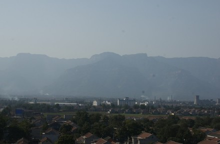

我们公司的同事假期去了太行山写生，回来的时候大声赞叹那边风景美，人也非常热情。没想到，隔天我就要去太行山下的林州参加全国政协举办的走进林州的歌会。
的确，这里很美，酒店的窗户一开就看的见太行山，绵延不绝。可惜我们停留时间不长，不然我一定要去爬爬山。人也很热情，现在晚上已经非常冷了，才10度而已，但是头天晚上彩排的时候，在体育场外面还是有很多人来看彩排。中午吃饭的时候，由于忙着化妆没有时间下去吃，酒店的经理甚至不让我的同事帮我把饭带到我房间，说怕在途中受到污染影响我的身体。经理啊，我没有那么娇贵，我吃坏了肚子不会怪你们的。
这次唱歌非常的爽，就在太行山下，觉得能量十足，大地山川的力量。难怪住在山区的人嗓子好啊！